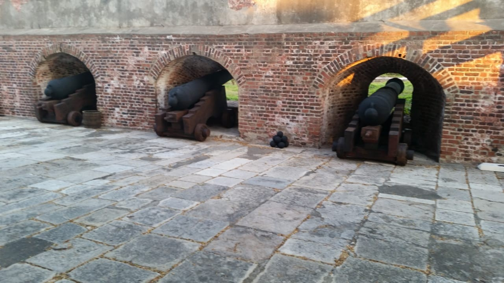
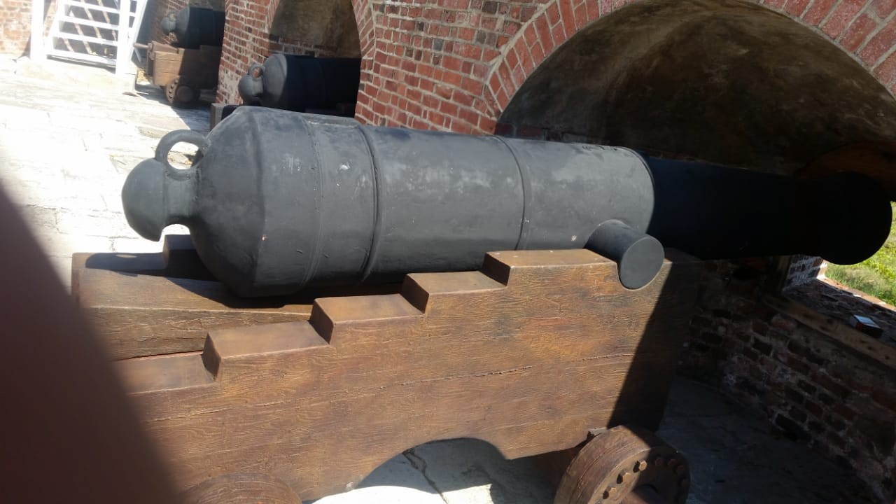

Kingston · Jamaica
Port Authority Sculptures
Large-scale heritage sculptures


A series of large-scale sculptural pieces created for the Port Authority, including approximately 10-foot cannon replicas designed to resemble historical 18th-century pieces and incorporate the appearance of weathering and age.
View All Press